A321 R3 보존·R4 표면 및 격자 개선 연구
2026-11-08 KST · 30 m/s·기준 받음각 0° 준비 · GPU 해석 HOLD
R3를 원본으로 보존하고 날개 연결부를 국소적으로 다듬은 R4 모델을 만들었다. 별도 Blender 파일을 저장하고 새 프로세스에서 정점·삼각형을 정확히 재읽고 시험 STL과도 대조했다. 새 CPU 후보 08~11을 모두 생성·재검사했다. 08·10·11에서 낮은 보간 가중치 실패를 해소했고, 09에는 182면이 남았다. 작은 determinant·오목 셀 실패는 모든 후보에서 남았다. 부분 개선 / 공학적 품질 미통과 / 항공기 GPU 해석 미실행이다.
현재 진행률·통과 기준
GPU 전 체크포인트 8개 중 3개 완료를 유지한다. 이는 단계 개수이며 공학적 완성도나 예상 계산 성공 확률의 백분율이 아니다.
| 순서 | 체크포인트 | 상태 | 확인·통과 기준 |
|---|---|---|---|
| 1 | 원본·기준선 보존 | 완료 | R3 STL·BLEND, 03~07 이력 보존. 새 후보는 별도 경로. |
| 2 | 계산 후보·화면 표시 | 완료 | R3·별도 R4 표시, 새 08~11 CPU 생성·재읽기. 08·11 층 수·격자 화면 비교. |
| 3 | 기본 CPU 수치 | 완료 — 제한적 | 08~11도 독립 비직교 ≤70°, 상대 폐합 ≤1e-10, 양수 체적, 단일 연결·폐합·방향 검사 통과. 확장 검사는 별도 미통과. |
| 4 | 형상 적합성 | 부분 | 국소 R4 생성·위상·재읽기 확인. 앞전/뒷전·실제 익형·전체 매끄러움·전역 교차·허용오차는 미완료. |
| 5 | 경계층 포착 | 부분 | 면적뿐 아니라 실제 층 수·누락 위치·두께를 함께 판단. 8층 요청을 평균 8층으로 기록하지 않음. |
| 6 | 확장 품질 검사 | 미통과 | 작은 determinant·오목 셀·낮은 보간 가중치 검사. 실패를 0으로 숨기거나 기준을 낮추지 않음. |
| 7 | 실제 엔진 CPU 인수 | 미실행 | 정확한 solver 바이너리·mesh 계약과 CPU 인수 확인 필요. 이번 작업에 유동 solver 없음. |
| 8 | GPU 실행 전 검토 | 보류 | 물리 설정·엔진 지원·VRAM 예산·중단 기준까지 확인해야 함. |
매끄럽지 않은 모델을 어떻게 고쳤나
쉽게 말해 R3는 단면들을 직선으로 연결한 삼각형 껍데기다. 끊긴 홈을 메운 뒤에도 연결 지점의 기울기는 갑자기 바뀔 수 있다. 이번 R4는 그중 날개의 일부 연결부를 끝점과 기울기를 맞추는 곡선으로 다듬은 연구 파생 형상이다. 색상이나 조명을 바꾼 것만이 아니라 실제 정점 좌표와 삼각형을 새로 만들었다.
별도 모델 열기: R4 Blender 파일, R4 STL. 원본 R3는 기존 integration/models 경로에 보존했다.
| 구분 | R3 기준 | R4 국소 개선 |
|---|---|---|
| 보존 | 원 STL·BLEND 그대로 유지 | models/A321_AIRFRAME_SHELL_R4.stl 및 .blend 별도 저장 |
| 변경 범위 | 기존 무슬롯 연속 외형 | 날개 내부 단면 궤적 6개 연결 지점 주변만 보간, 좌우 미러 |
| 이동 | 기준선 | 최대 대응 단면 이동 0.250164 mm. 절대 상한 10 mm와 국소 edge 기반 제한 중 더 작은 값 사용 |
| 앞전·뒷전 | 기존 기준 | 해당 대응 점을 정확히 고정. 원래 outline 꺾임은 유지 |
| 위상 | 이전 검증 보존 | 154,098 삼각형, 정점 77,051개, 경계·비다양체 edge·중복·퇴화면 0, vertex-link 실패 0, 연결 성분 1 |
| Blender 재읽기 | 원본 저장 안 함 | 새 프로세스에서 좌표·삼각형 정확 일치 |
| 남은 한계 | OEM·공력 정확도 미검증 | 전체 NURBS 곡면 재설계 아님. STL은 여전히 조각별 평면. 앞전/뒷전 포함 전역 C1·익형·전체 교차는 미검증 |
R3→R4와 역방향 각각 12,000개 표본 거리의 최대는 0.008338 mm / 0.039099 mm다. 표본이 좁은 변경 구간을 놓칠 수 있어 이 숫자를 전체 최대 편차로 사용하지 않는다. 위 0.250164 mm는 대응 단면 점의 변경량, 거리 표본은 서로 다른 측정이다. 극소 triangle angle 0.002787°도 남아 있어 표면 분할 품질이 모두 해결된 것은 아니다. 형상 원장, 독립 표면 표본, Blender 저장, 새 프로세스 재읽기, native·NPZ·시험 STL의 정확한 삼각형 대응 보강. 마지막 보강은 생성 후 추가한 대조이며 원래 생성 시점의 동결인 것처럼 소급하지 않는다.

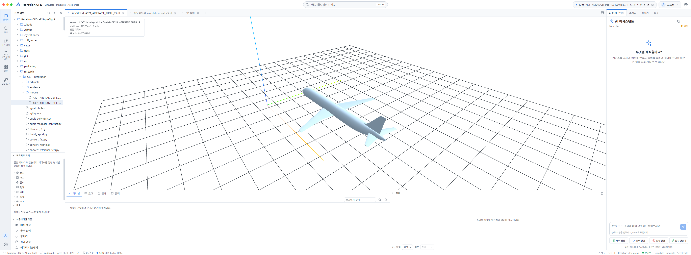
실제 STL 읽기. 화면 삼각형 수는 표시용 용접·퇴화면 제외 때문에 정확 원본 수와 다르다.

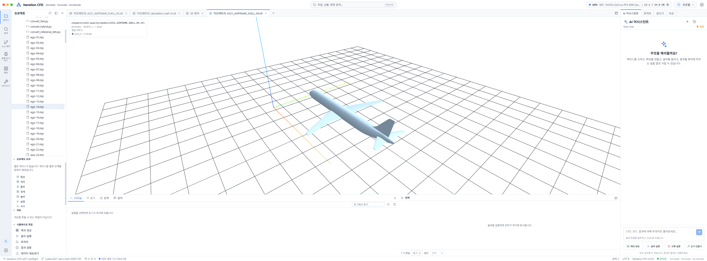
국소 변경은 작아 전체 화면만으로 개선 크기를 판단하지 않는다. Studio 형상 미리보기는 flat shading을 사용한다.
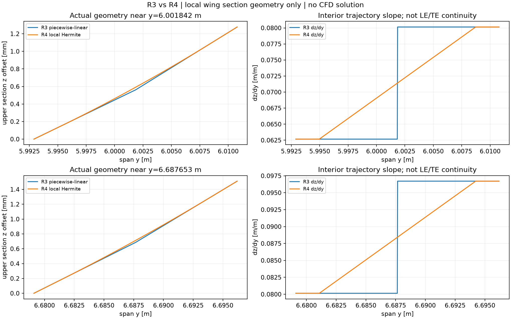
생성 원장에 고정한 보간 폭을 사용했다. 오른쪽은 내부 단면의 해석적 생성 궤적 기울기이며 삼각형 STL 전체의 C1 연속성을 증명하지 않는다. CFD 압력·속도 그래프가 아니다.
원인을 구분한 CPU 실험
모든 후보는 06의 외부 영역·refinement·8층 요청·명목 첫 높이 4 mm를 유지한다. 이 높이는 30 m/s의 올바른 물리적 벽처리 높이로 승인한 값이 아니다.
| 후보 | 형상 | 의도적으로 바꾼 항목 | 비교 의미 |
|---|---|---|---|
| 06 | 원 R3 | 기존 기준 | 비교 기준 |
| 08 | 원 R3 | 생성 minFaceWeight 0.02→0.05만 | 생성 허용값과 확장 검사 0.05를 맞추는 대조 |
| 09 | 별도 R4 | 표면만 변경 | 기존 06과 같은 모든 system 사전 |
| 10 | 별도 R4 | 09 대비 minFaceWeight 0.02→0.05만 | 형상 변경과 가중치 조건 결합 |
| 11 | 별도 R4 | 10 대비 nBufferCellsNoExtrude 1→3만 | 경계층 종료부 완충 효과 대조 |
| 측정 | 06 기준 | 08 weight | 09 R4 | 10 R4+weight | 11 완충 3 |
|---|---|---|---|---|---|
| 셀 수 | 1011805 | 1010837 | 1012696 | 1011614 | 941938 |
| 작은 determinant 셀 | 2964 | 2899 | 2966 | 2901 | 85 |
| 오목 셀 | 44911 | 44732 | 45077 | 44883 | 35393 |
| 낮은 보간 가중치 면 | 176 | 0 | 182 | 0 | 0 |
| 확장 검사 실패 종수 | 3 | 2 | 3 | 2 | 2 |
| 층 생성 면적 | 92.76% | 91.16% | 92.95% | 91.33% | 94.07% |
| 무층 면 | 3663 | 4259 | 3489 | 4104 | 3093 |
| 전체 벽면 수 | 57556 | 57556 | 57559 | 57559 | 57559 |
| 완전 8층 면 | 2897 | 2896 | 2915 | 2908 | 0 |
| 실제 평균 층 수 | 3.14 | 3.13 | 3.16 | 3.14 | 1.93 |
| 독립 최대 비직교 ° | 65.437 | 65.948 | 67.040 | 65.948 | 65.948 |
| 최대 상대 폐합 | 5.52e-15 | 5.52e-15 | 6.23e-15 | 6.23e-15 | 4.57e-15 |
| 비양수 체적 셀 | 0 | 0 | 0 | 0 | 0 |
모든 후보는 유체 연결 성분 1, 계산 벽 폐합·방향 검사 통과다. 상대 폐합과 비직교는 독립 직렬화 재읽기 값이며 native 검사와 정의가 완전히 같다고 취급하지 않는다. 실제 평균 층 수는 mesher 최종 overall thickness 표의 반올림 값이고 요청한 8층과 다르다. 실패 집합은 중복될 수 있다. 새 입력·로그·검사·지도는 비교 원장에 묶는다.
읽는 방법: 08은 가중치 문제를 없앴지만 층 면적이 06보다 약 1.60 percentage points 줄었다. 09는 국소 형상을 다듬어도 불량 수가 저절로 줄지 않았고, 10은 R4와 가중치 조건을 함께 적용해 낮은 가중치 면을 없앴지만 모든 품질을 닫지 못했다. 11은 10 대비 determinant 셀 2901→85·오목 셀 44883→35393으로 줄고 면적도 늘었다. 그러나 8층 면이 전부 사라지고 평균이 1.93층으로 줄었으므로 최종 경계층 모델로 채택하지 않는다. 넓은 면적과 충분한 층 깊이를 함께 확보해야 한다.
후속 대조군: 06은 기존 높은 층 면적 기준, 10은 R4+강화된 가중치 조건 기준, 11은 완충으로 발생한 층 깊이 손실 진단으로 보존한다. 단일 점수로 순위를 매기지 않으며 어떤 후보도 GPU 실행용으로 승인하지 않는다. R3→계산 벽의 최대 표본 이탈은 여전히 약 46.309 mm여서 국소 R4 수정이 계산 벽의 전역 형상 충실도 문제까지 해결한 것은 아니다.
판정 경계: mesher의 “오류 없음”과 재구성 후 확장 검사의 정의·범위가 다를 수 있다. 06은 mesher에서 determinant 오류 0으로 끝났지만 확장 검사에서는 2,964개가 실패했다. 구현 원인을 확정한 것으로 쓰지 않으며 재구성 후 검사 결과를 따른다. maxConcave는 면의 각도 제어이므로 오목 셀 집합과 같은 검사가 아니다.
Studio에서 보는 격자와 경계층
색상은 native mesher 층 수 진단이며 압력·속도 해석 결과가 아니다. 원 case에 유동 초기장이나 시간을 전진한 해를 만들지 않았다. 진단 표시용 복사본의 비벽 셀 값 -1은 미정의다. 벽 인접 owner별 최소 native 층 수를 사용하며 08은 벽면 57556개, 10·11은 57559개 모두 원 face 값과 대응하고 공유 owner 충돌은 0이다.

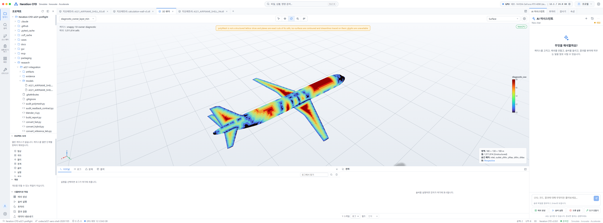
고정 0~8 범위. 면적 91.33%, 평균 3.14층, 8층 면 2908개.

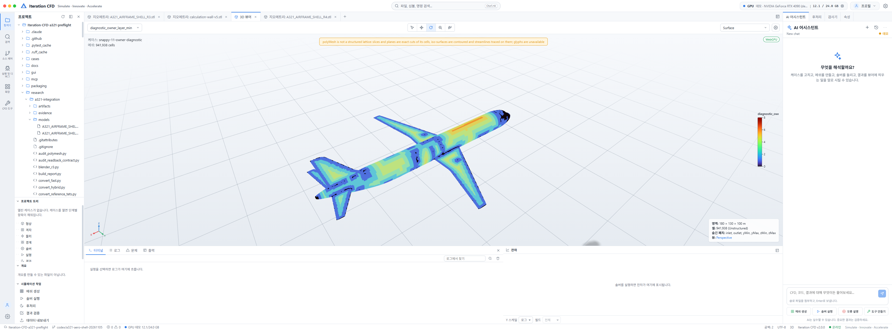
같은 0~8 범위·시점. 면적 94.07%여도 평균 1.93층, 완전 8층 면 0개다. 색 보간만으로 층 수를 세지 않는다.

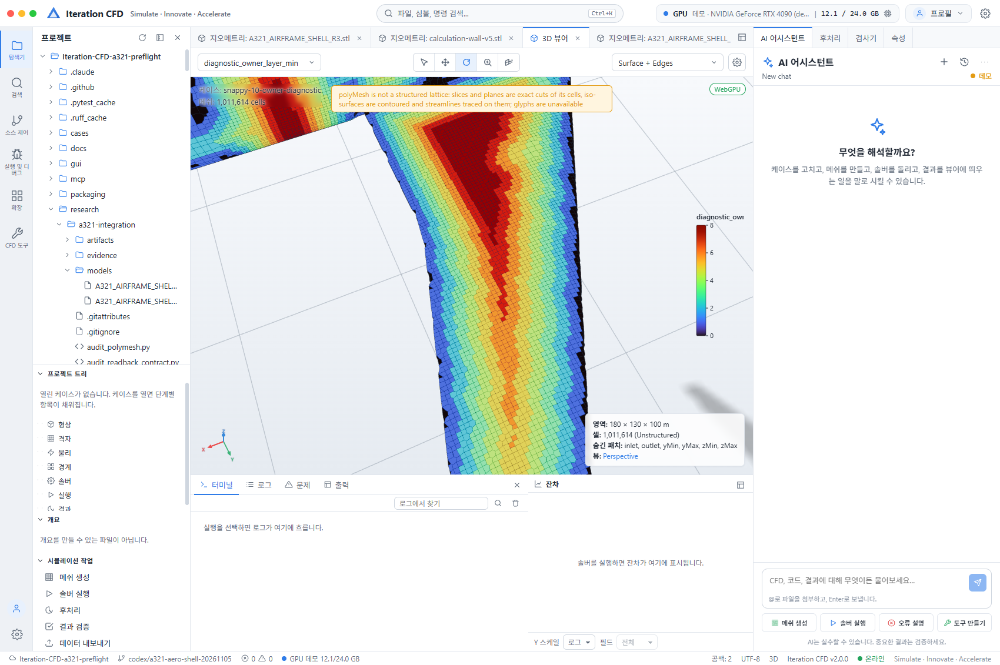
실제 aircraft 벽 패치의 surface+edges 표시. 전체 체적 셀의 모든 내부 면을 동시에 보여주는 화면은 아니다.

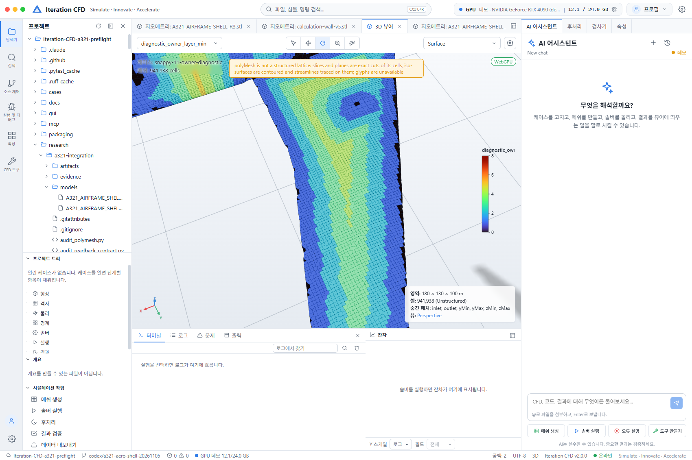
면적 증가와 층 깊이 손실을 함께 비교한다. 실제 셀 품질은 좌표·로그·집합 검사로 판단한다.
08 실제 Studio 기록, 10 실제 Studio 기록, 11 실제 Studio 기록. 화면의 GPU 4090 24GB는 Studio demo 정보이며 실제 4080 SUPER 측정이 아니다.

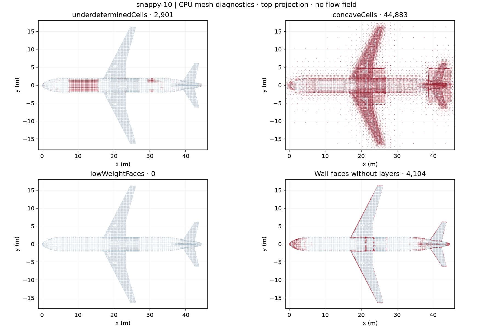
재구성 mesh label과 native 층 필드를 실제 좌표로 연결한 상면 투영. 0개 가중치 면과 측정 누락을 구별한다.

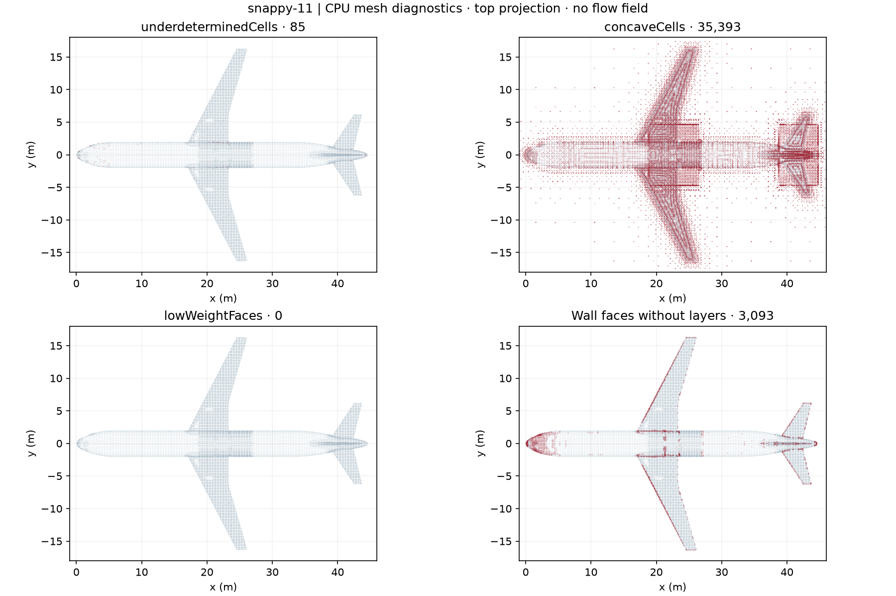
determinant 85개와 오목 셀 35393개는 여전히 실패다. 무층 면 감소가 8층 확보를 뜻하지 않는다.
08 지도 원장, 09 지도 원장, 10 지도 원장, 11 지도 원장.
남은 단계와 계속 진행할 순서
- 11의 남은 determinant 85개와 오목 셀 35393개를 좌표·층 종료 위치로 좁힌다. 85개 중 x=0~12 m 40개, x=20~26 m 24개다. 오목 셀은 x=20~26 m 14930개, x=39~45 m 7813개가 남는다. x 구간을 해부학적 패치 이름으로 확정하지 않는다.
- 10에서 관측한 평균 3.14층·완전 8층 면 2908개를 유지하면서 종료 전이·국소 크기 변화를 개선한다. 이 층 깊이의 물리적 충분성은 아직 미검증이다. 11의 평균 1.93층·8층 면 0개를 그대로 수용하지 않는다. 층을 줄여 얻은 수치 개선을 최종 경계층 개선으로 판정하지 않는다.
- 국소 R4의 한계를 검토하고 실제 필요한 전체 단면 연속성·곡률·익형·전역 교차 검사와 feature 허용오차를 확정한다.
- 30 m/s·기준 받음각 0°의 난류 모델·벽처리·근벽 높이·총 경계층 두께·기준 면적 및 길이를 정한다.
- 실제 엔진 CPU mesh 인수, GPU solver 지원·VRAM 예산·잔차/질량/힘 이력과 종료 기준을 확인한다. 품질 통과 전 항공기 GPU 해석 금지를 유지한다.
이전 연구와 출처·재현 기록
아래 접기 항목에 기존 06·07 경계층/근벽 거리 연구, 03~05 실패 위치 지도, 초기 통합 준비표와 상세 원문을 보존한다. 이전 실험 수치를 새로 실행한 것처럼 표시하지 않는다.
- 공개 layer-control 문서, 공개 mesh-quality 문서: 파라미터 의미 참고. 실제 실행기는 v1912이며 문서 버전과 구별한다.
- NASA CFD 검증·확인 튜토리얼: 사용자 제공 원 URL을 실제 Ego Lite에서 다시 열어 제목을 확인했다. 현재 A321 모델·격자의 합격 근거로 사용하지 않는다. 접근 기록.
- 도구 출처, 저속 시험 준비 명세, 이전 API/OpenCodex 검토.
- 생성 입력과 실행본은 각 case의 input-manifest와 .execution.lock에 보존한다. 전체 격자·NPZ는 로컬 artifacts, 작은 진단·로그·스크린샷은 evidence에 둔다.
- Studio R3 캐시 EPERM은 생성 캐시 디렉터리를 보존·격리한 뒤 같은 Studio에서 재읽어 복구했다. R4 화면 대기 오류는 숨은 R3 탭의 첫 DOM을 읽던 선택자 문제였으며 실제 R4 읽기는 성공했다. 최소화 촬영 오류는 같은 창 복원 후 재촬영했다.
- 최초 단면 그림은 실제 국소 edge 제한을 빠뜨린 폭을 사용해 채택하지 않았다. 본문에는 동결 원장의 폭을 직접 읽는 verified 그림만 사용한다.
- 검토에서 진단 로그의 다른 case·시간 혼합 가능성을 발견해 constant 실행·대상 경로를 엄격히 확인하고 별도 clone에서 실제 확장 검사를 다시 실행했다. 08~11 모두 원본/clone의 5개 mesh 배열과 기존 진단 집합이 재검사 전후 일치했다. 이는 이번 재검사 시점의 결합 증거이며 원래 mesh 실행 시점에 해당 해시가 동결됐다는 주장으로 소급하지 않는다.
- 파일이 없다는 이유만으로 낮은 가중치 면을 0으로 취급하지 않았다. 명시적 native 통과 문구·현재 mesh·clone 재검사·합성 빈 집합의 출처를 함께 확인했다. 이전 08~10 기록은 보존하고 새 bound 후속 기록을 분리했다. 08 bound 재검사, 09, 10, 11, 11 명시적 zero 결합.
- native 로그의 불완전 종료·fatal 오류를 성공으로 읽거나 실패한 증거 복사본이 정상 재시도를 막는 경로도 회귀 검사했다. 최종 수행·검토 기록, 전체 격자·실행 입력 원장.
이전 06·07 경계층·실제 근벽 거리·30 m/s 준비 전체 보기
A321 경계층 개선·재부팅 복구 보고서
2026-11-08 KST · 저속 목표 30 m/s·받음각 0° · R3 보존 · 항공기 GPU 해석 HOLD
컴퓨터 종료 전에 끝난 CPU 실험과 원시 데이터를 다시 확인하고 작업을 복구했다. snappy-06은 층 생성 면적 92.76%, 비직교 65.44°, 상대 폐합 5.52×10⁻¹⁵였다. 그러나 확장 검사 3개 실패와 형상·벽처리의 미확정 조건이 남아 있어 항공기 해석은 실행하지 않았다. 이 보고서의 색상은 압력·속도가 아니라 실제 mesher가 만든 층 수다.
지금까지와 준비 상태
GPU 전 체크포인트 8개 중 3개 완료를 유지한다. 새 후보와 시각화는 4~6번의 연구 진전이며 공학적 합격으로 대신 세지 않았다.
| 순서 | 체크포인트 | 상태 | 현재 증거·남은 기준 |
|---|---|---|---|
| 1 | R3 동결·보존 | 완료 | STL 원 SHA 일치, BLEND·이전 후보 보존. |
| 2 | CPU 후보 생성·Studio 표시 | 완료 | 06·07 계산 완료. 재부팅 후 06의 1,011,805셀과 0~8층 지도 재확인. |
| 3 | 핵심 수치·기본 CPU 검사 | 완료 — 제한적 | 06·07은 70°/1e-10, 양수 체적·폐합·연결·기본 checkMesh 통과. |
| 4 | 기준 형상 적합성 | 부분 | 07의 p95 편차는 개선됐지만 최대 표본 약 46.3 mm, feature 허용오차·전역 보증은 미확정. |
| 5 | 경계층 설계·포착 | 부분 — 크게 개선 | 06 면적 92.76%, 8층 면 2,897개. 실제 첫 높이·총두께·벽처리 적합성은 미검증. |
| 6 | 확장 검사 | 실패 | 06도 determinant·concave·보간 가중치 세 항목 실패. |
| 7 | 실제 엔진 CPU 인수 | 미실행 | 바이너리와 정확한 인수 경로 및 케이스 계약 확인 필요. |
| 8 | GPU 실행 전 검토 | 보류 | 과거 SUPER 메모리 시험만 통과. solver 호환·실제 케이스 메모리·실행 종료 조건 미완료. |
복구 범위: 새 계산을 돌려 결과를 다시 만든 것이 아니다. 저장된 mesh·진단·중심 데이터·입력 사전·원시 로그를 해시로 재검증하고 Studio 및 로컬 보고서 서버를 다시 띄웠다. 아래 결과는 2026-11-07의 CPU 실험 결과이며 2026-11-08에 복구·검증했다.
Ego Lite에서 실제로 보는 경계층

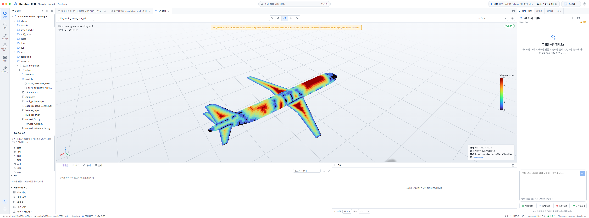
고정 범위 0~8. 색은 계산한 압력이 아니라 native layer-count 진단값이다. 표면이 아닌 안쪽 셀의 색을 공력 결과로 해석하지 않는다.

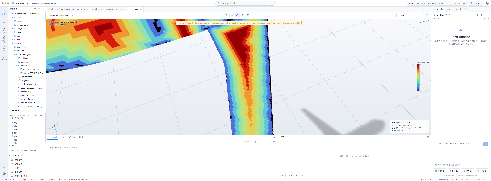
붉은 쪽이 많은 층, 파란 쪽이 적은 층이다. 0과 8 사이 영역도 남으므로 전체 8층 완료가 아니다.
이전 ASCII triangle VTU는 Studio reader에서 실패했다. 이번에는 원 mesh를 그대로 복사한 시각화 전용 케이스에 diagnostic_owner_layer_min이라는 명시적 진단 scalar만 추가했다. 같은 wall-adjacent owner를 공유하는 면에서는 최소 층 수를 쓴다. 현재 04와 06에서는 충돌이 없고 각각 벽면 57,556개 모두 원래 face 값과 일치한다. 비벽 셀은 -1=미정의다. 벽 패치만 표시한 화면이며, 색상 보간·조명·표시용 삼각분할은 진단 원장이나 물리적 수치 검사를 대신하지 않는다.
원본 case에 압력·속도·난류장이나 해석 결과를 만든 것은 아니다. 시각화 복사본의 0/은 진단값이며 CFD가 한 시간 전진했다는 뜻이 아니다. Studio의 데모 GPU 표시는 4080 SUPER 실측이 아니다. 복구 후 화면 상태, 06 진단 대응.
원인을 분리한 두 CPU 실험
두 후보 모두 snappy-04에서 출발했고 R3와 품질 기준은 그대로다. 06은 명목 첫 층 1→4 mm만, 07은 최소 표면 refinement level 4→5만 바꿨다. mesh 생성 조건은 유속이나 y⁺를 풀어 계산하지 않는다.
| 항목 | 출발점 04 | 높이 대조 06 | 해상도 대조 07 |
|---|---|---|---|
| 셀 수 | 935,120 | 1,011,805 | 1,260,388 |
| 독립 최대 비직교 | 66.202° | 65.437° | 66.201° |
| 상대 폐합 | 8.89e-15 | 5.52e-15 | 1.12e-14 |
| 층 생성 면적 | 42.60% | 92.76% | 83.02% |
| 완전 8층 face | 380 | 2,897 | 11,138 |
| 실제 평균 층 수, native 최종 표 | 1.81 | 3.14 | 3.16 |
| 무층 face / 전체 wall face | 19,948 / 57,556 | 3,663 / 57,556 | 14,545 / 86,436 |
| 작은 determinant 셀 | 28,086 | 2,964 | 146,407 |
| concave 셀 | 38,769 | 44,911 | 56,414 |
| 낮은 보간 가중치 면 | 3,114 | 176 | 11,419 |
| 기본 검사 / native illegal | PASS / 0 | PASS / 0 | PASS / 0 |
| 확장 검사 | 3개 실패 | 3개 실패 | 3개 실패 |
| R3→후보 p95 표본 거리 | 4.244 mm | 4.244 mm | 1.572 mm |
| R3→후보 최대 표본 거리 | 46.309 mm | 46.309 mm | 46.309 mm |
연구 해석: 06은 04보다 셀 수가 약 8.2% 늘면서 층 면적이 약 50.16 percentage points 늘고 determinant·보간 문제는 줄었다. 하지만 concave 셀은 증가했다. 07은 형상 p95와 층 분할이 개선됐지만 작은 determinant 셀이 크게 늘어났다. 이 결과는 표면 해상도·첫 층 조건을 함께 설계해야 한다는 근거이며 4 mm가 올바른 물리적 첫 층이라는 결론은 아니다.
후속 경계층 조건 연구는 06을 유력한 대조군으로 삼는다. 07은 형상·분할 효과를 보는 보조 대조군으로 보존한다. 둘 다 engineering acceptance나 GPU 실행용 mesh로 승인하지 않는다. 확정된 수치·해시 원장.
평균 층 수는 로그의 처음 요청 표가 아니라 마지막 overall thickness 집계 표에서 읽었다. 검토에서 요청값 8을 평균으로 오인하는 추출 버그를 발견해 수정했고, 실제 04·06·07 로그와 요청 표 대조로 회귀 검사했다. native 표의 평균은 반올림 표시이며 면적 가중 평균과 다르다.

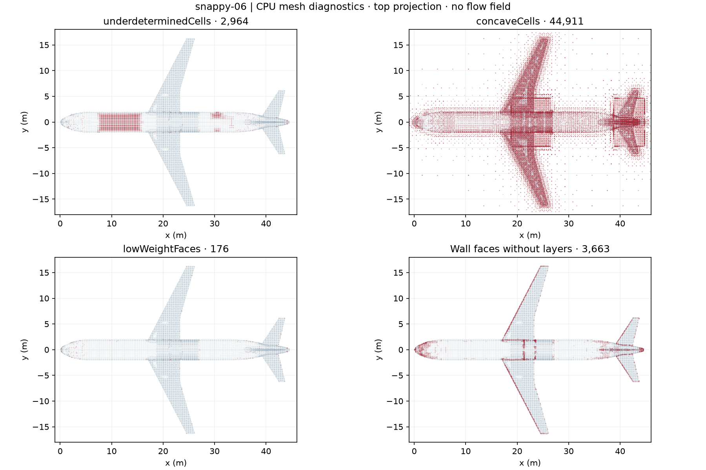
작은 determinant와 낮은 가중치 면은 줄었지만 오목 셀은 남아 있다. 실패 집합은 서로 겹칠 수 있다.

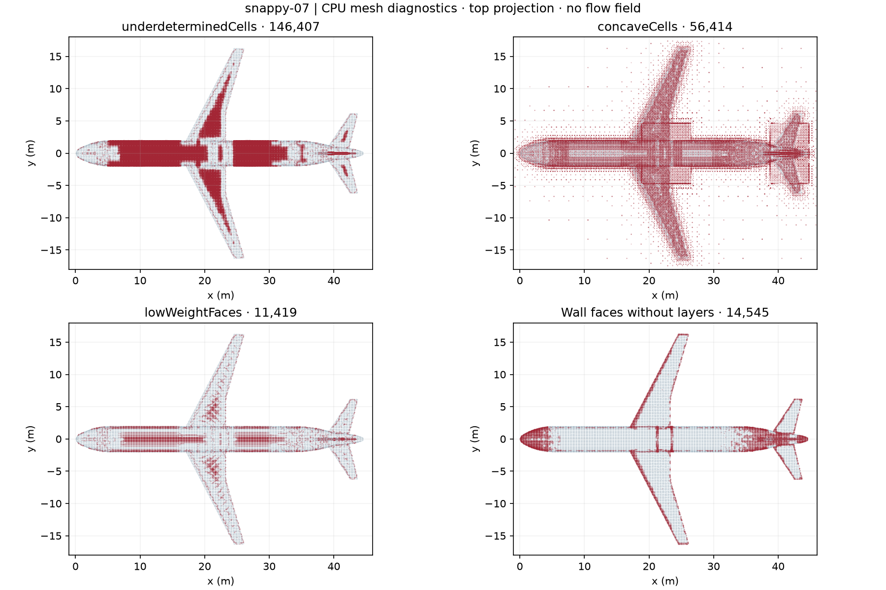
더 세밀한 면이 더 좋은 수치 품질을 자동으로 뜻하지 않는다. 두 지도의 점 개수를 같은 셀 해상도로 간주하지 않는다.
실제 근벽 위치는 얼마나 달랐나
명목 첫 층 높이와 실제 셀의 벽 이격은 다르다. 저장된 셀 중심에서 명시적 float64 계산 벽 삼각형까지 최근접 Euclidean 거리를 모든 wall face의 owner에 대해 구했다. 같은 owner의 반복은 face 가중으로 그대로 센다. 이는 첫 셀 전체 높이, solver가 쓰는 벽 거리장 또는 y⁺ 자체가 아니다.
| 층이 생성된 면의 owner 중심 거리 | 04 | 06 |
|---|---|---|
| 최소 | 0.494 mm | 1.228 mm |
| 중앙값 | 2.264 mm | 7.705 mm |
| p95 | 5.790 mm | 23.185 mm |
| 최대 | 7.570 mm | 31.646 mm |
쉽게 말하면: 06은 얇은 방이 찌그러지는 문제를 줄여 층을 더 많이 붙였지만, 실제로 바람이 빠르게 변하는 벽 근처를 더 잘 해석하게 됐다는 뜻은 아니다. 다음에는 이 거리를 30 m/s 조건과 선택한 벽처리의 요구에 맞춰 판단해야 한다. 전단응력과 마찰속도를 아직 계산하지 않아 solved y⁺는 없다. 04 거리, 06 거리.
선택하신 첫 공력 시험 준비
사용자 선택: 30 m/s·기준 받음각 0°의 저속 외부유동 기초시험. 순항·고받음각 성능 시험이 아니며, 원형 A321의 비행 인증이나 정확한 항력 값을 목표로 삼지 않는다.
| 항목 | 준비 명세 | 판정 경계 |
|---|---|---|
| 속도·방향 | 계획 U=(30,0,0) m/s | 모델의 nose→tail +X 기준. 실제 솔버 입력은 아직 생성하지 않음. |
| 받음각 | 모델 기준축 상대 0° | 공력적 zero-lift 각도라는 뜻은 아님. |
| 물성 | 임시 계획 상수 ρ=1.225 kg/m³, ν=1.5e-5 m²/s | 실제 고도·온도·풍동 측정값이 아님. 대기 조건 확정 전의 가정. |
| 동압 | 가정으로부터 q=551.25 Pa | 해석 결과 압력이 아니라 ½ρU² 계산값. |
| Reynolds 수 | 단위 길이당 U/ν=2,000,000 m⁻¹ | Re=UL/ν. 기준 길이·면적은 미확정이며 계수를 내지 않음. |
| 형상·벽 | R3 연구 셸, stationary no-slip wall 계획 | 엔진·파일런·착륙장치 생략. 실제 벽처리·난류 모델은 미선정. |
| 바깥 경계 | xMin 입구·xMax 출구, 나머지는 외부 유동 경계 계획 | 움직이는 지면으로 취급하지 않음. 엔진 지원 계약 확인 필요. |
| 출력·종료 조건 | 잔차·질량 보존·힘 이력·벽 진단 계획 | 반복 한도·안정화·중단 기준은 CPU 인수 후 고정. |
| 현재 실행 | 미실행 | 준비 명세만 작성. GPU·CFD 솔버를 시작하지 않음. |
준비 JSON은 실행용 case.jsonc가 아니다. 난류 입구 조건, 벽처리와 y⁺ 목표, 기준 면적·길이, CPU mesh 인수, VRAM 예산이 닫히기 전에 이를 솔버 입력으로 바꾸지 않는다. NASA Reynolds 설명은 Re=UL/ν 관계의 참고이며, 위 임시 물성이나 A321 해석의 합격 근거가 아니다.
남은 단계·복구 증거
- 06의 남은 3,663개 무층 면과 44,911개 concave 셀을 우선 추적한다. 주익·꼬리 표면의 층 종료부와 전이 셀을 실제 좌표·패치로 분류한다.
- 30 m/s 조건의 난류·벽처리를 정하고, 실제 중심 거리와 목표 y⁺·총두께를 함께 설계한다. 단순히 명목 첫 높이를 더 키워 mesh 수치만 좋게 만드는 선택은 하지 않는다.
- 형상 feature 허용오차를 먼저 고정하고 07에서 확인한 세분화 이점을 선별 적용한다. 최대 약 46.3 mm 표본 이탈은 미해결이다.
- 동일 70°/1e-10·양수 체적·접합·전역 충돌 및 확장 검사로 다시 판정한다. 실제 ofgpu CPU 인수와 실행 바이너리·CUDA/SM89 호환·메모리 예산도 확인한다.
- 모든 조건이 닫힌 뒤에만 GPU 짧은 시험을 검토한다. 이번에는 GPU 메모리 진단도 반복하지 않았다.
컴퓨터 종료는 mesh 생성 완료 뒤였다. 저장된 06·07의 입력과 원시 출력, 진단·중심 데이터·시각화 복사본을 재대조했다. 상대 경로 runner 복사 문제와 다른 mesh의 seal을 섞을 수 있는 경로는 수정하고 회귀 검사를 추가했다. 원래 실행된 runner 복사본과 수정 후 파일은 구분한다. 자세한 복구·검토 범위는 복구 기록에 남긴다.
이전 연구·API 기록
직전의 실패 지도·03→04/05 비교·GPU 메모리·API/OpenCodex 검토, 초기 준비표와 2026-11-06 상세 원문은 아래 접기 항목에 모두 보존했다. OpenCodex 실제 게이트웨이 연결은 미검증이며 이 복구에서 전역 API 설정을 바꾸지 않았다. API 검토.
NASA V&V tutorial의 반복·공간 수렴과 실험 검증은 앞으로의 별도 단계다. 현재 화면 로딩이나 mesh gate가 공력 validation을 대신하지 않는다.
이전 03→04·05 위치 지도·GPU 진단·API 검토 전체 보기
A321 실패 위치 지도와 CPU 개선 재검사
2026-11-07 KST · R3 원본 보존 · 다음 연구 후보 snappy-04 · 항공기 GPU 해석 HOLD
실패 셀·면 ID와 실제 경계층 필드를 좌표로 연결하고, 그 결과로 두 CPU 후보를 생성·재검사했다. 국소 세분화 후보는 층 생성 면적을 33.27%에서 42.60%로 늘렸다. 비직교·폐합 기준도 유지했다. 셀 수가 2.02배이고 확장 실패는 남아 있으므로 공학적 승인이나 GPU 실행 허가로 바꾸지 않는다. 기준 snappy-03과 R3 STL·BLEND는 보존했다.
진행률과 GPU 준비 상태
기존 8개 체크포인트 중 3개 완료를 유지한다. 지도화와 개선 실험은 4~6번의 진전이며, 승인된 GPU 메모리 진단은 8번의 일부다. 단계 수를 늘려 완료율을 높이지 않았다.
| 번호 | 단계 | 현재 상태 | 이번 진전과 아직 필요한 것 |
|---|---|---|---|
| 1 | R3 기준선 보존 | 완료 | 동일 SHA256. 입력 복사본과 원본을 구분하고 원본을 수정하지 않음. |
| 2 | CPU 후보 생성·표시 | 완료 | 03 보존, 새 04·05 생성. Studio에서 04의 935,120셀 확인. |
| 3 | 핵심 수치·기본 검사 | 완료 — 제한적 | 04도 ≤70°와 ≤1e-10, 양수 체적·닫힌 wall·기본 검사 통과. |
| 4 | 계산 형상 적합성 | 부분 | 04의 R3→계산 표면 p95 4.244 mm, 최대 표본 46.309 mm. feature 허용 기준과 전역 거리 보증은 미완료. |
| 5 | 경계층 | 부분 — 개선 | 면적 42.60%, 완전한 8층은 380면. 무층 영역과 실제 첫 높이·벽처리 목표는 남음. |
| 6 | 확장 검사 | 실패 — 지도 확보 | 04도 3개 검사 실패. 절대 개수와 비율을 함께 공개. |
| 7 | 실제 엔진 CPU 인수 | 미실행 | 지정 release 경로에서 실행 바이너리를 확인하지 못함. 물리·경계 조건과 인수 경로 준비 필요. |
| 8 | GPU 실행 전 점검 | 일부 진단 통과 / 보류 | SUPER 고정 UUID로 1 GiB 할당·64 MiB 왕복 통과. 엔진 호환·케이스 최대 VRAM·짧은 솔버 시험은 미검증. |
GPU 시험의 실제 범위: 장치 메모리 접근만 실행했다. 산술 CUDA 커널, 항공기 솔버, 부하·열·장시간 안정성 시험은 실행하지 않았다. 테스트 전후 같은 CUDA context의 free memory는 동일했고, 다른 프로세스를 종료하지 않았다. 이번 GPU 기록.
실패가 어디에 있었나
아래는 실제 좌표의 위쪽 투영이다. 회색은 계산 벽, 빨간 점은 해당 실패 또는 무층 face 위치다. 압력·응력 분포가 아니다. 셀 집합은 겹치며, 그림은 항공기 주변을 잘라 보여준다. x 범위 밖 concave 셀도 03에 506개, 04에 715개가 있어 전부를 그림 안의 항공기 부위로 해석하지 않는다. 전체 xyz·ID는 로컬 CSV에 보존했다.

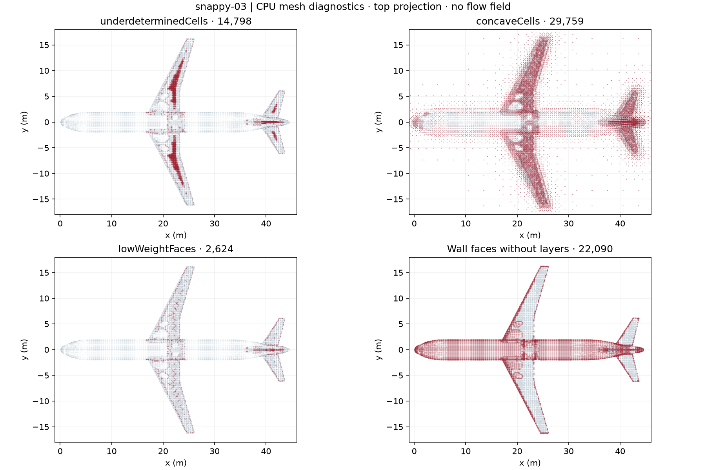
작은 determinant·오목 셀·낮은 가중치·무층 face를 같은 좌표계에서 비교한다.

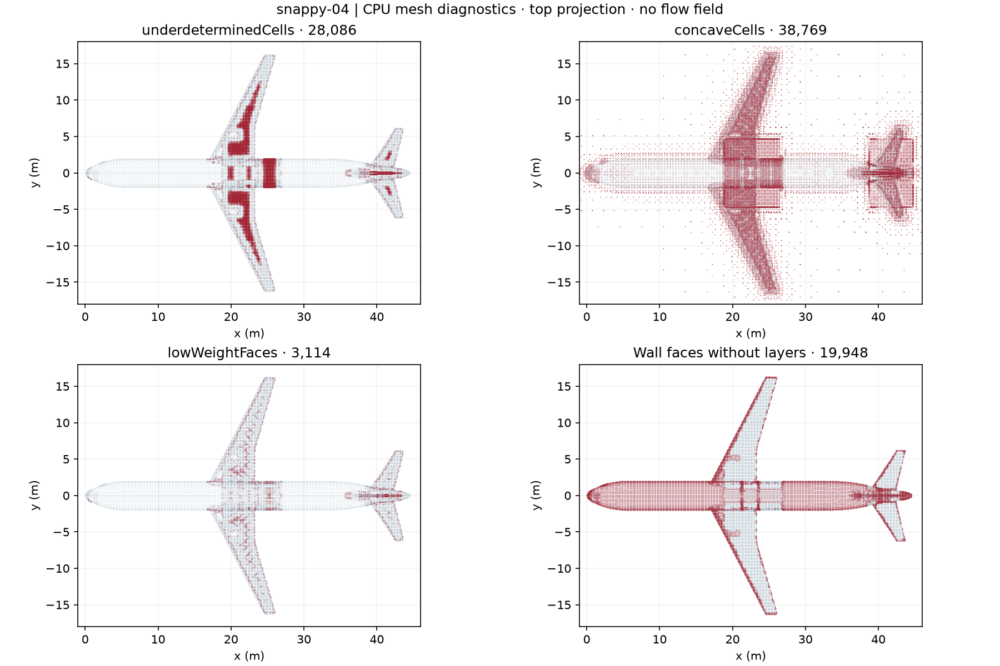
해상도를 바꾸면 ID와 셀 수가 달라진다. 같은 ID끼리 비교하지 않는다.
| x 구간 | 기준 03: 작은 determinant / concave / 낮은 가중치 | 기준 무층 면적 | 04 무층 면적 | 해석 |
|---|---|---|---|---|
| 0–12 m | 0 / 1,549 / 0 | 100.00% | 99.87% | 실패 셀 수는 적어도 층 포착은 사실상 없음. |
| 12–20 m | 229 / 2,796 / 261 | 90.55% | 76.71% | 전방 동체 쪽 층 설계가 필요. |
| 20–26 m | 8,303 / 14,355 / 1,456 | 34.40% | 17.92% | 주익이 있는 종방향 구간. 우선 세분화 대상으로 선정. |
| 26–33 m | 0 / 1,394 / 0 | 100.00% | 90.72% | 몸통 뒷부분의 무층 문제는 여전히 큼. |
| 33–39 m | 124 / 1,186 / 123 | 91.98% | 88.42% | 후방 연결 부위의 층 포착 추가 연구 필요. |
| 39–45 m | 6,142 / 7,973 / 784 | 27.61% | 24.18% | 꼬리 쪽 두 번째 세분화 대상. |
표는 이름으로 식별한 정확한 구조 패치가 아니라 겹치지 않는 종방향 구간이다. 지도는 reconstructed face ID와 processor별 signed one-based 주소를 대조해 만들었다. 모든 wall face가 정확히 한 번 매핑됨을 확인했다. 기준 원장, 04 원장에 입력·집합·주소·필드·중심 데이터 SHA를 남겼다. 같은 개수의 다른 ID로 바꾸는 경우도 거부한다.
기준 집합은 원본을 건드리지 않고 복사한 격자에서 checkMesh를 다시 실행해 세 집합의 ID 전체가 일치함을 확인했다. 독립 재검사. 진단 seals는 생성 후 snapshot이며 최초 실행 전 동결이었다고 주장하지 않는다.
우선순위에 따른 개선과 재검사
04는 x=19–26.5 m의 안쪽 주익 부근과 x=38.8–44.6 m 꼬리 뿌리 부근에 level-5 refinement box를 추가했다. 05는 공간 분할을 그대로 두고 명목 첫 층 1→0.75 mm, 최소 총두께 4→2 mm만 낮췄다. 둘 다 기존 8층 요청, R3 입력, 70°/1e-10 판정 기준을 유지했다.
| 항목 | 기준 03 | 국소 세분화 04 | 얇은 층 대조 05 |
|---|---|---|---|
| 셀 수 | 462,113 | 935,120 | 400,549 |
| 독립 최대 비직교 | 66.204° | 66.202° | 77.969° — 실패 |
| 상대 폐합 | 8.26e-15 | 8.89e-15 | 9.60e-15 |
| 층 생성 면적 | 33.27% | 42.60% | 8.92% |
| 완전한 8층 face | 33 | 380 | 0 |
| 작은 determinant 셀 | 14,798 | 28,086 | 861 |
| concave 셀 | 29,759 | 38,769 | 22,204 |
| 낮은 보간 가중치 면 | 2,624 | 3,114 | 1,304 |
| 확장 검사 | 3개 실패 | 3개 실패 | 5개 실패 |
| native 최종 illegal faces | 0 | 0 | 168 |
| 연구 판정 | 기준 보존 | 후속 연구 후보 | 제외 |
04의 determinant 셀 비율은 약 3.20→3.00%, concave 셀 비율은 6.44→4.15%로 낮아졌지만 절대 실패 개수는 늘었다. 다른 해상도의 셀 비율만으로 물리적 오류가 줄었다고 증명할 수 없다. 04 선택의 직접 근거는 핵심 기준을 유지하면서 층 면적이 9.33 percentage points 늘어난 것이며, 비용은 셀 수 2.02배다.
05에서는 face-tet 품질 문제 1면과 낮은 체적 비율 46면도 나왔다. 실패 수가 줄어 보이는 것은 층이 대거 사라진 결과와 함께 읽어야 한다. 더 얇게 만드는 방식은 채택하지 않았다. 후보 비교·판정 원장.
Ego Lite Studio에서 확인한 후속 모델

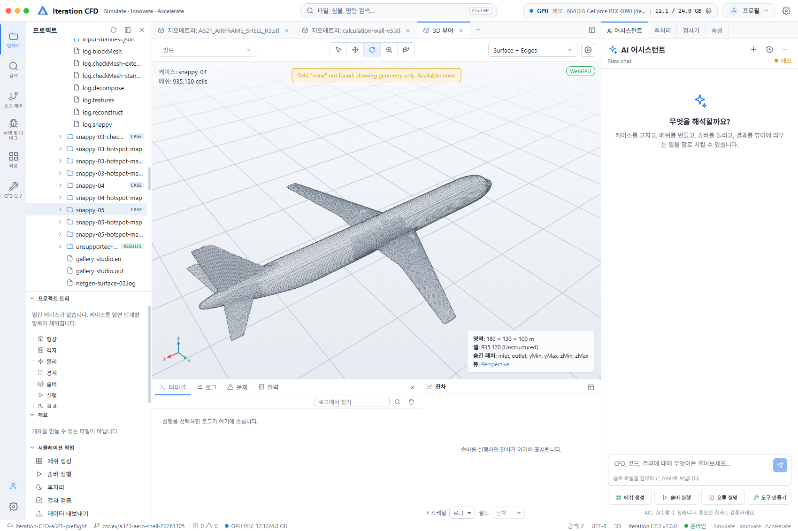
바깥 경계 6개를 숨긴 실제 polyMesh 표시다. 내부 셀 전부를 그린 화면은 아니다.

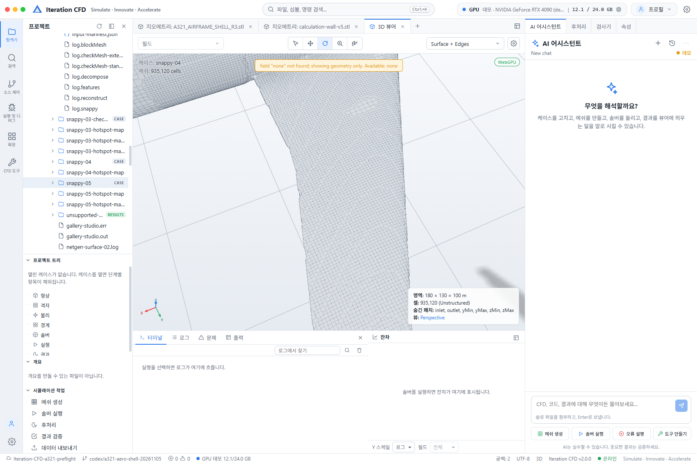
표면 모서리와 표시용 삼각 분할을 보여 준다. 압력·속도·해석 결과는 없다.
진단 색상 지도를 위한 ASCII triangle VTU도 시험했지만, 현재 Studio reader는 그 입력을 받지 못하고 원래 polyMesh로 fallback했다. native_layer_count는 표시되지 않았다. 그 화면을 색상 지도 성공 증거로 쓰지 않았다. 실패 파일과 코드는 로컬 별도 보관했고 실제 case 폴더에서 분리했다. 현재 지도 근거는 원시 ID·필드·CSV와 CPU 도식이다. Studio 실제 상태.
승인된 GPU 진단의 실제 결과
| 항목 | 결과·범위 |
|---|---|
| 장치 | NVIDIA GeForce RTX 4080 SUPER, 고정 UUID 사용 |
| 할당 | 최대 1 GiB |
| 대조 | 64 MiB host→device→host 왕복, 원 패턴과 동일 |
| 반납 | 할당 전·반납 후 같은 context의 free bytes 15,794,700,288로 동일 |
| 실행하지 않은 것 | 산술 커널·항공기 솔버·실제 케이스 최대 VRAM·장시간 부하 |
이 결과는 제한된 장치 접근 시험 PASS다. 다른 GPU 작업의 메모리를 종료하거나 비우지 않았고 전체 GPU 여유가 앞으로도 같다는 보장은 없다. 현재 선택한 실제 격자의 메모리 예산과 solver 호환성이 미검증이므로 항공기 해석은 HOLD다.
API와 OpenCodex 검토
- 직접 API 호출은 수행했다. 실제 Studio health와 격자 open/read 요청을 보내 기준 462,113셀을 확인했다. 현재 조회 API에는 AI 키나 코드 수정이 필요하지 않다.
- SDK 연결도 로컬에서 검증했다. 실제 Studio Anthropic 어댑터를 합성 루프백 서버에 연결해 Messages SSE와 도구 요청 JSON을 파싱했다. 더미 키만 썼고 도구 자체나 외부 모델은 실행하지 않았다.
- OpenCodex 연결은 조건부로 가능하다. 설치 CLI는 2.97.0이며 확인 당시 기본 10100 포트는 실행 중이 아니었다.
ANTHROPIC_BASE_URL=http://127.0.0.1:10100경로를 쓰면 프로토콜이 호환될 경우 환경 설정만으로 연결할 수 있다. 실제 OpenCodex 모델·계정 연결은 미검증이다. - 별도 공급자/URL 등록 UI, Responses 전용 연결, 3D 진단 형식의 추가 지원이 필요하면 해당 어댑터·UI 코드를 바꿔야 한다. 현재 전역 Codex 설정이나 기존 Studio의 공급자·키는 바꾸지 않았다.
상세 설정·수정 판단과 로컬 시험을 참고한다. OpenCodex는 프로토콜을 중계하는 게이트웨이이며 모델 공급자 설정과 인증은 별도다.
다음 작업과 중단 조건
- 04를 연구 출발점으로 삼되 03을 비교 기준으로 유지한다. 주익 바깥 부분, 동체 앞·중앙의 무층 면적을 실제 패치로 다시 분류한다. 종방향 구간을 OEM 구조명으로 대체하지 않는다.
- 세분화로 늘어난 28,086개 작은 determinant 셀을 층 높이·종횡비·전이 위치와 함께 분석한다. 얇은 층 후보의 감소 수치만 보고 선택하지 않는다.
- 유속·Reynolds 수·벽처리, 실제 첫 층과 총두께 목표를 먼저 정한다. 46.3 mm 표본 최대 편차는 여전히 허용오차 합격 근거가 아니다.
- 새 후보는 동일 70°/1e-10, 양수 체적, 접합·폐합, 확장 검사와 층 포착 기준으로 재검사한다. 모든 과거 후보와 실패를 보존한다.
- 실제 ofgpu 바이너리·CPU mesh 인수와 케이스 최대 VRAM 예산을 확인하기 전에는 항공기 GPU 해석을 시작하지 않는다. 빌드 기본 아키텍처는 현재 120이므로 SUPER에는
OFGPU_CUDA_ARCH=89확인이 필요하다. 로컬 nvcc 경로는 CUDA 12.6이며 빌드/솔버 호환성을 이번 메모리 시험으로 대신하지 않는다.
후처리 진입 중 실행 중인 스크립트를 보강해 실패한 작업자 실수가 있었다. 원본과 03은 영향이 없었고 완료된 04·05 processor mesh를 보존했다. 재구성·검사만 새 스크립트로 수행했다. 원 decompose 로그 하나가 오류 로그로 대체된 사실도 숨기지 않았다. 사건·복구 기록.
이 보고서 작업에서는 Python/Node 의존성 설치와 공개 문서 조회가 네트워크를 사용할 수 있었다. “외부 요청 없음”이라는 SDK 시험의 표기는 합성 API 시험 자체에 대한 것이며 전체 작업의 인터넷 사용을 부정하는 말이 아니다.
이전 연구 기록
아래 두 접기 항목에 직전 준비표·모델 갤러리와 전체 상세 실험 기록을 그대로 보존했다. 초기 CPU, R2 셸, R3 통합·VRAM, R3 고정 경계층도 직접 열 수 있다.
이전 통합 준비표·모델 갤러리 전체 보기
A321 공력 해석 준비 보고서
2026-11-07 KST · GPU 해석 보류 · CPU 격자 후보 snappy-03
R3 원본은 보존했다. 계산에 쓸 별도 벽면과 462,113셀 격자를 만들었고, 비직교 66.20°, 상대 폐합 8.26×10⁻¹⁵로 정해 둔 두 수치 기준을 통과했다. 그러나 확장 검사 3개 실패, 경계층 면적 33.3%, 형상 허용오차 미확정 때문에 항공기 GPU 솔버는 실행하지 않았다.
한눈에 보는 진행률
GPU 실행 전 체크포인트 8개 중 3개 완료. 아래 표의 완료 행만 센 값이다. 단계의 중요도나 남은 시간에 가중치를 둔 공학적 완성률이 아니다. 현재 우선순위는 4~6번 병행 → 7번 → 8번이다.
| 순서 | 체크포인트 | 상태 | 지금까지 확보한 것 / 완료 조건 |
|---|---|---|---|
| 1 | 기준 형상 동결 | 완료 | R3 STL SHA256 일치, BLEND·STL 변경 없음. 파생 모델은 별도 경로에 보관. |
| 2 | CPU 격자 후보 생성·표시 | 완료 | snappy-03의 저장된 polyMesh와 벽면을 Studio에서 확인. hex/poly 대안이며 사면체 경로의 합격은 아님. |
| 3 | 핵심 수치·기본 CPU 검사 | 완료 | 최대 비직교 ≤70°, 상대 폐합 ≤1×10⁻¹⁰, 비양수 체적 0개, 유체 연결 성분 1개, 기본 checkMesh 통과. |
| 4 | 계산 벽면의 형상 적합성 | 부분 | 양방향 오차를 표본 측정. 기능부별 허용오차를 먼저 명시하고 앞전·뒷전·날개 뿌리·끝단·꼬리 단면으로 재검증. |
| 5 | 경계층 설계·포착 | 부분 | 면적 33.3%에 한 층 이상. 유동 조건과 벽처리에 맞춰 패치별 첫 높이·총 두께·층 수·면적 목표를 정하고 충족. |
| 6 | 확장 격자 품질 | 실패 | 작은 determinant, 오목 셀, 낮은 보간 가중치를 위치별로 분석하고 수정. 같은 핵심 수치 기준과 확장 검사 실패 0개를 다시 확인. |
| 7 | ofgpu 케이스·CPU 인수 검증 | 미실행 | 경계 조건·물리 모델·단위·패치 매핑을 확정. 실제 엔진의 격자 인수 검사를 CPU 범위에서 확인하고, 없으면 별도 인수 검사 경로를 마련. |
| 8 | GPU 실행 준비 검토 | 보류 | 4~7번 완료 후 실제 바이너리/SM89 호환, 케이스 메모리 예산, 짧은 시험 중단 조건을 기록. 항공기 GPU 시험은 이번 범위 밖. |
Studio 갤러리

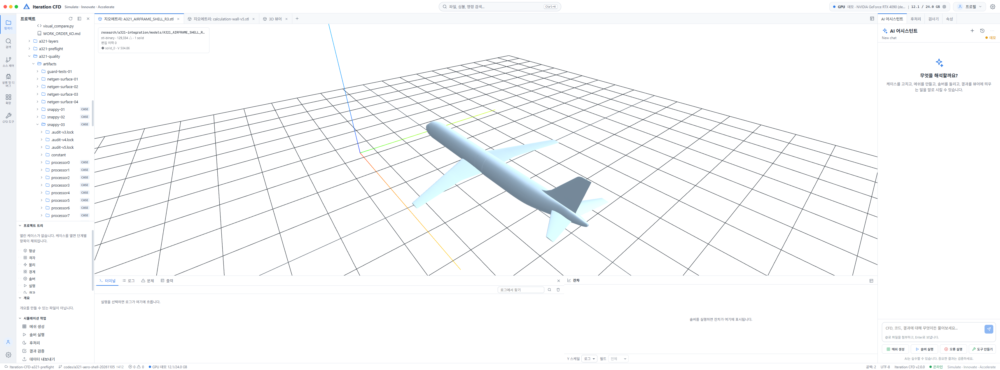
원본 STL을 열었다. 이 보고서 작업으로 새 형상을 만들거나 기존 R3를 수정하지 않았다.

같은 R3를 기준으로 생성한 snappy-03의 실제 계산 벽면이다. CAD 원본이나 공력 해석 결과가 아니다.

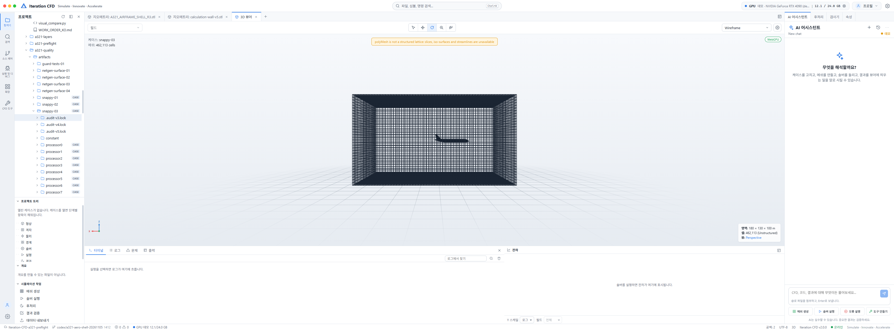
180 × 130 × 100 m, 462,113셀, 7개 경계. 모든 경계 패치를 켠 외곽 와이어프레임이며 내부 셀 전체를 그린 화면은 아니다.

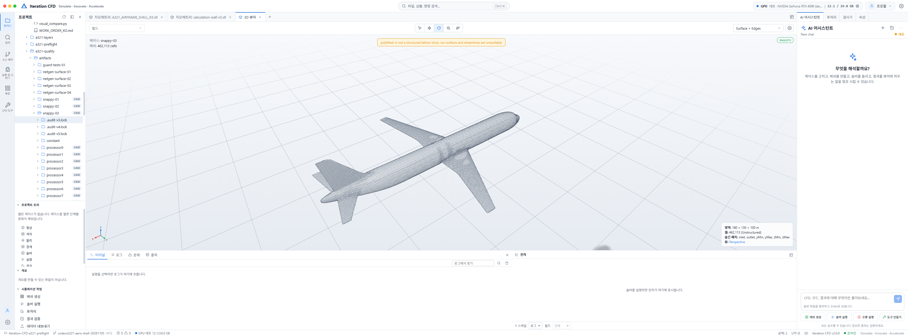
같은 polyMesh에서 풍동 경계 6개를 숨기고 aircraft 패치만 표시했다.

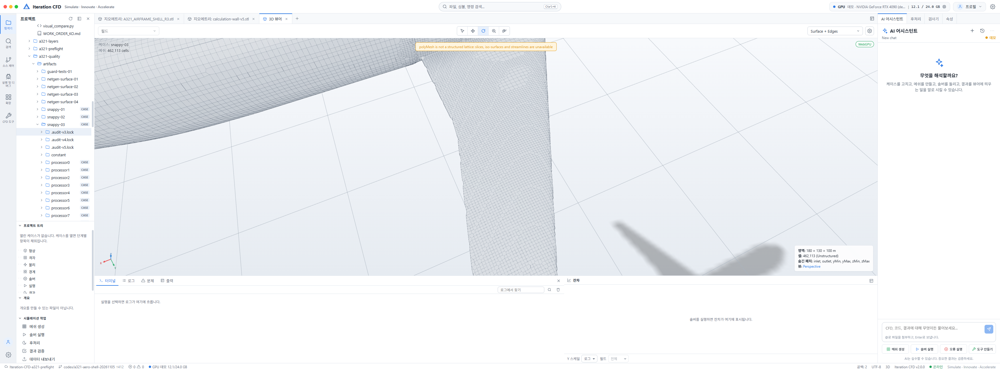
Studio의 표면 및 모서리 표시. 보이는 선은 벽면 표시용 삼각 분할을 포함하며 경계층 내부 셀을 뜻하지 않는다.

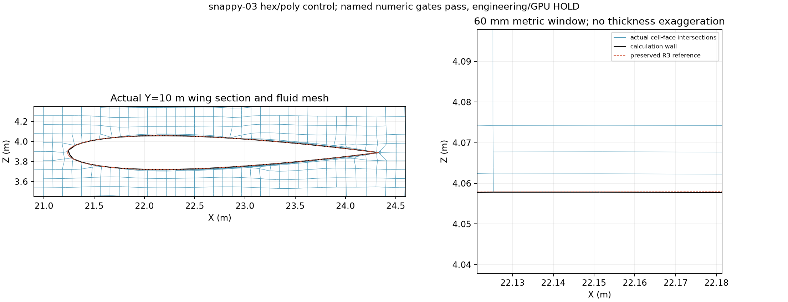
저장 polyMesh를 Y=10 m에서 자른 독립 CPU 도식. 오른쪽은 60 mm 창이며 두께 과장이 없다. Studio 스크린샷과 구분한다.
이미지를 누르면 원본 크기로 열린다. 새 Studio 표시 상태 원장에 후보명, 셀 수, 표시·숨김 패치와 카메라를 기록했다. Studio 상단의 데모 GPU 표시는 실제 RTX 4080 SUPER 측정이 아니다. 비정렬 단면 UI 시험에서는 레이어를 추가했지만 내부 셀이 화면에서 확인되지 않아 단면 표시 통과로 계산하지 않았다. 이번 보고서의 내부 단면 근거는 독립 CPU 도식이다.
남은 단계와 통과 증거
| 우선 | 할 일 | 합격을 판단할 산출물 |
|---|---|---|
| 1 | 무층 영역 지도: 동체·날개 뿌리·앞/뒷전·끝단·꼬리로 나눠 무층 위치와 이유를 찾는다. | 영역별 전체/층 생성 면적, 0~8층 분포, 최소/중앙 두께, 잘린 위치. 현재 51,685면 중 22,090면 무층, 8층은 33면. |
| 2 | 형상과 층을 함께 수정: 우선 비행 조건·Reynolds 수·벽처리를 정하고 첫 층 높이와 총 두께 목표를 고정한다. 형상 오차가 큰 곳에는 국소 세분화와 층 종료·전이를 적용한다. | 수정 전 고정한 패치별 형상 및 층 허용 기준, 양방향 거리·단면 차이·층 높이 실측, 후속 격자의 영역별 기준 충족. 현재 명목 1 mm는 측정된 첫 층이 아니다. |
| 3 | 확장 실패 제거: 14,798개 작은 determinant 셀, 29,759개 오목 셀, 2,624개 낮은 보간 가중치 면을 위치별로 분류하고 재격자화한다. | 신규 후보에 동일 70°/1e-10 기준, 양수 체적·연결·접합·전역 충돌 검사, 확장 검사 실패 0개. 이전 실패 원장 유지. |
| 4 | ofgpu 케이스 준비: 유동 조건, 기준 면적·길이, 항력/양력 방향, 초기·경계 조건, 솔버 설정을 고정한다. | 정확한 모델/격자 SHA와 입력 사전, CPU mesh 인수 결과. Studio에서 읽혔다는 사실만으로 대체하지 않는다. |
| 5 | GPU 직전 점검: 위 조건이 닫힌 후에만 RTX 4080 SUPER용 바이너리/SM89 및 CUDA 호환, VRAM 예산과 시험 종료 조건을 확인한다. | 버전·장치·예상 사용량과 안전 여유를 담은 실행 계획. 예전 VRAM 접근 시험은 항공기 규모의 적합성 검사가 아니다. |
다음 작업의 시작점: 로컬 artifacts/snappy-03/constant/polyMesh/sets/에 underdeterminedCells, concaveCells, lowWeightFaces가 남아 있다. 이 ID를 같은 후보의 셀·면 좌표에 연결하면 문제 위치를 좁힐 수 있다. 경계층은 processor별 0/nSurfaceLayers와 0/thickness에서 시작한다. 실패 집합은 서로 겹칠 수 있으므로 개수를 더해 전체 불량 셀 수로 보고하지 않는다. 재격자화하면 ID가 바뀌므로 구·신 후보의 ID를 직접 비교하지 않는다.
두께 수치를 읽는 법: 명목 첫 층 1 mm는 입력값이다. 층이 생긴 면에서 mesher가 기록한 전체 층 두께의 중앙값은 16.22 mm, 최소는 0.835 mm였다. 이 값은 첫 셀 높이나 해석 후의 y⁺가 아니다. 층 원시 집계에 0~8층 분포가 있다.
나중 단계: GPU 짧은 시험 뒤에도 잔차, 질량 보존, 양력·항력 이력, 격자 수렴, 비교 실험 검증이 필요하다. 이번 보고서에는 압력·속도·공력 계수·해석 결과가 없다. A321 형상은 엔진·파일런 등을 생략한 연구용 겉껍데기다.
이전 연구를 잇는 기록
| 연구 단계 | 확인한 결과 | 다시 열기 |
|---|---|---|
| CPU 사전 검토 | 참조 모델과 메싱 기준선을 정하고 원 형상의 제약을 기록했다. | 초기 사전 검토 |
| R2 공력 셸 | 외형용과 해석용을 분리했다. R2와 R3 사이 날개 홈·뒷전 복원 변경을 추적했다. | R2 셸 연구 |
| R3·Studio·VRAM | R2/R3 Studio 표시와 초기 hybrid 변환을 확인했다. 1 GiB 할당·64 MiB 왕복 시험은 메모리 접근 진단이었다. | 통합·VRAM 연구 |
| R3 고정 8층 연구 | 1,036,176개 프리즘의 비양수 국소 Jacobian 0개. 전체 1,251,054셀의 비직교 89.99° 및 상대 폐합 4.01×10⁻¹⁰으로 해석용 불합격. | 경계층 연구와 단면 |
| hex/poly 대안 | 두 수치 기준과 기본 검사 통과. 전 표면 층, 형상 허용오차, 확장 검사는 미완료. 아래 상세 기록에 모든 수치와 실패 후보를 보존했다. | 최종 감사 |
상위 저장소 동기화
상위 저장소 using76/Iteration-CFD main의 1475bbf를 연구 브랜치에 병합했다. 기존 보고서와 격자는 병합에서 변경되지 않았다. 출처 문서 한 곳의 충돌을 해결해 상위 Blender 어댑터 목록과 A321 연구 출처를 함께 보존했다.
상위 저장소의 polyMesh 인수 개선과 검증·검정 계획은 다음 준비 작업의 참고다. 이 변경이 A321 격자를 솔버에서 승인하거나 GPU 해석을 실행한 증거는 아니다. 새 스크린샷은 병합 뒤 연구용 Studio의 루프백 주소 127.0.0.1:5185에서 얻었다. 아래 ‘Ego Lite Studio 실제 확인’은 이전 실행 기록이다.
상세 실험 원문
아래는 기존 2026-11-06 상세 보고서다. 후보별 실패, 감사 방법, 경계층 및 형상 수치, 재현 문서를 삭제하거나 요약으로 대체하지 않았다.
2026-11-06 상세 실험 원문 전체 보기
A321 R3 계산 격자 품질 연구 — 2026-11-06
결론: 비직교·상대 폐합과 기본 CPU mesh 검사는 통과했다. 전체 연구 목표는 PARTIAL이며 항공기 GPU 해석은 계속 HOLD다.
유효 수치 후보는 snappy-03이다. R3 STL·BLEND 원본을 보존하고, 원 R3를 입력으로 계산용 벽면 분할·경계층·외부 격자를 함께 다시 생성했다. 이번에 통과한 것은 hex 중심 polyhedral 대안이다. 기존 사면체 경로가 합격했다거나 항공기 해석이 완료됐다는 뜻은 아니다. 확장 품질, 층 포착 범위, 형상 허용오차는 아래에 실패·미확정으로 그대로 남긴다.
실제 판정
| 검사 | 결과 | 기준·범위 |
|---|---|---|
| 원 R3 SHA256 | 일치 | 원본 파일 변경 없음 |
| 셀 / 점 / 면 | 462,113 / 553,581 / 1,473,152 | 저장된 polyMesh 재읽기 |
| 유체 연결 성분 | 1 | 전체 내부 face graph |
| 비양수 체적 | 0 | 최소 체적 3.840634e-6 m³ |
| 최대 비직교, 수정된 독립 적분 | 66.203955° | ≤70°: PASS |
| 70° 초과 내부 면 | 0 | 전체 1,409,115 내부 면 |
| 최대 상대 폐합 | 8.259123e-15 | ≤1e-10: PASS |
| 원시 wall ID 폐합·winding | PASS | 좌표 병합 없이 signed edge incidence 검사 |
| native mesher 최종 illegal faces | 0 | 전체 생성 종료 로그 |
| 기본 checkMesh | Mesh OK | 외부 CPU 검사 PASS |
| 최대 skewness, native | 2.999645 | 기본 검사 PASS |
| 확장 checkMesh | 3개 검사 FAIL | 전체 공학적 합격으로 승격하지 않음 |
| 항공기 GPU / flow solver | 미실행 | GPU_HOLD 유지 |
근거: 최종 독립 감사 v5, 판정 원장, 기본 검사, 확장 검사, mesher 로그.
폐합은 이전과 똑같이 |ΣSf| / V^(2/3)로 계산했다. OpenFOAM의 cell openness와 분모를 바꾸어 통과시키지 않았다. 기본 도구가 출력한 비직교 최댓값 64.924239°와, 삼각형별 signed 체적·1차 모멘트로 구한 독립값 66.203955°를 구분한다. 둘 다 70° 이하이며 보고에는 더 큰 독립값을 사용한다.
v2 감사는 오목 면의 절댓값 면적 가중·warped 면의 중심 축약 문제가 있었다. v4는 평면 U형·비평면 큐브·실제 warped face 반례로 계산법을 수정한 뒤 같은 polyMesh를 다시 읽었다. v2 기록은 삭제하지 않았으며 최종 acceptance에는 v5만 사용한다. 현재 mesh의 다섯 파일 SHA와 후보·원본 SHA가 감사 영수증과 일치하지 않으면 패키징을 거부한다.
최종 v5에서는 읽기 전과 출력 직전에 다섯 파일 SHA를 비교해 감사 도중 변경도 거부했다. v4와 수치는 동일했으며, v5 영수증의 mesh_unchanged_during_audit는 이 실제 재실행 결과다.
이번에 바꾼 방법
이전 프리즘·사면체 격자는 최대 비직교 89.9927°, 폐합 4.0103e-10이었다. 뒤집힘을 피하려고 일부 층이 약 32nm까지 줄어들었다. 독립 진단에서 나쁜 프리즘 면 대부분은 층 사이가 아니라 가늘고 긴 바닥 삼각형의 옆면이었다. 더 얇게 만드는 것만으로는 해결되지 않았다.
새 대조 경로는 R3 표면을 기준으로 외부 hex를 국소 세분화하고 표면에 맞춘 뒤, 내부 mesh를 함께 이동시켜 층을 넣는다. 원 STL 삼각형과 계산 벽면의 분할은 서로 다르다. 따라서 원본 보존과 파생 계산 형상의 오차는 각각 검사했다. WSL Ubuntu 24.04에 설치한 외부 OpenFOAM 1912.200626-2build3의 blockMesh, surfaceFeatureExtract, snappyHexMesh, checkMesh만 CPU 도구로 사용했다. 최신 버전이라고 주장하지 않는다. 프로젝트 solver 구현에는 외부 코드를 복사하지 않았고 GPL 구현 소스는 읽지 않았다.
| 후보 | 실제 결과 | 처리 |
|---|---|---|
| snappy-01 | 두 수치 기준 통과, skewness 및 확장 검사 실패 | 대조 기록 보존 |
| snappy-02 | 기본 Mesh OK지만 최대 비직교 70.147065°, native illegal 211개 |
명시 기준 위반으로 제외 |
| snappy-03 | 01에서 skewness 제한만 3으로 강화. 두 수치 기준·기본 검사·native 0 illegal 통과 | 제한된 CPU 수치 후보 |
| Netgen binary/ASCII/단순화 표면 | Windows control-byte 입력 문제, tiny-point 처리·열린 출력·나쁜 최소각 확인 | 사면체 후속 입력으로 승격하지 않음 |
사면체 raw 출력의 경계 정점 2개는 삭제가 아니라 미세 이동이었다. 국소 좌표 복구 시험에서는 영향받는 사면체가 양수였지만, 이를 전체 사면체 합격으로 확대하지 않았다. 상세 근거는 DIAGNOSIS_KO.md에 있다.
경계층: 요청과 실제를 구분
설정은 첫 층 명목 1mm, 성장률 1.2, 8층 요청이다. 실제로 모든 표면에 8층이 생긴 것은 아니다.
| 측정 | 결과 |
|---|---|
| 벽면 face 수 | 51,685 |
| 1층 이상 있는 face 수 | 29,595 |
| 면 개수 기준 coverage | 57.2603% |
| 면적 기준 coverage | 33.2675% |
| 전체 face 평균 층 수 | 1.4420 |
| 면적 가중 평균 층 수 | 0.8256 |
| 8층을 모두 가진 face | 33개 |
| 무층 face | 22,090개 |
원시 mesher 진단 필드 집계는 nSurfaceLayers와 thickness를 processor별 실제 wall face에 대응시켜 계산했다. 총 두께 필드로부터 실제 첫 층 분포를 추정하지 않았다. solved y+와 점성 경계층 포착 여부는 미측정이다. 전 표면 경계층 완성이나 항력 예측 준비 완료로 부를 수 없다.
그림은 실제 mesh의 Y=10m 평면 교차선이다. 파란 선은 계산 셀 면, 검은 선은 계산 벽, 빨간 점선은 보존한 R3다. 오른쪽은 실제 60mm 창이며 두께를 과장하지 않았다. 이 국소 단면의 층 수를 전체 항공기에 일반화하지 않는다.
형상 보존과 남은 품질
원 R3 STL SHA256: 2c0111c3bafd34b49b506325e52d13045f997aeaced11236f45b744f08abe745.
계산 벽면은 raw ID로 닫혀 있고 winding이 일관되지만, R3와 완전히 같은 표면은 아니다. 양방향 12,000개씩의 고정 seed 면적 표본에서:
- R3→계산 벽: p95 4.312mm, 최대 46.308mm.
- 계산 벽→R3: p95 4.300mm, 최대 34.640mm.
- 둘러싼 체적: R3 504.860824m³, 계산 벽 503.906822m³.
이는 전체 Hausdorff 보증이 아니며, 허용오차를 합의해 통과시킨 결과도 아니다. 표본 거리를 본 뒤 임의의 허용치를 만들어 형상을 합격시키지 않았다. 앞전·뒷전·접합부·tip의 별도 feature/단면 검증과 국소 refinement가 남는다.
확장 검사는 작은 determinant 14,798셀, concave 29,759셀, 낮은 interpolation weight 2,624면을 보고했다. concave/warped polyhedron의 양수 체적과 기본 검사 통과가 이 결과를 지우지 않는다. 전역 overlap의 별도 증명도 없으므로 전체 mesh acceptance와 GPU HOLD 해제는 하지 않는다.
Ego Lite Studio 실제 확인
Ego TaskSpace 8에서 http://127.0.0.1:5183/를 사용했다. 실제 계산 벽면 STL을 열고, snappy-03 polyMesh를 462,113셀·553,581점·7개 patch로 읽어 3D viewer에서 확인했다. 완료 reader manifest, DOM, 실제 계산 벽, 실제 polyMesh 화면을 남겼다.


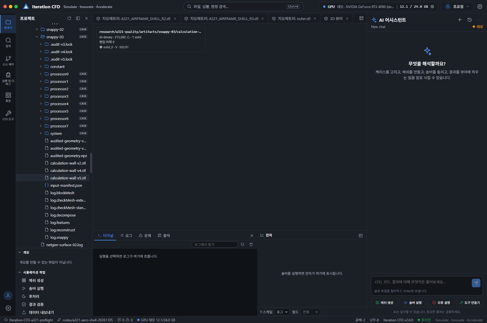
기본 polyMesh 표면 화면은 외부 풍동 박스가 항공기를 가린다. 별도 geometry 탭은 실제 계산 벽을 보여 준다. reader의 geometryFidelity: exact는 polyMesh 데이터를 읽는 정확도이며 계산 벽이 R3와 정확히 같다는 뜻이 아니다. 내보낸 벽의 법선은 유체 영역의 바깥, 즉 항공기 안쪽을 향하므로 geometry viewer의 닫힌 벽 체적은 약 -503.91로 표시된다. 이는 양수 유체 셀 체적 검사와 별개다.
상단 GPU RTX4090/24GB와 AI 패널은 데모 표시다. 4080 SUPER 실측이나 실제 AI solver 실행 증거가 아니다. fields/times는 비어 있으며 pressure·velocity·공력 계수는 생성하지 않았다. 비정렬 polyMesh의 slice/iso/streamline 제한도 그대로 표시된다. 별도 AI API 키나 외부 AI 호출은 필요하지 않았다.
다음 연구 순서
R3 원본 고정 [완료]
→ 계산 표면·경계층·외부 mesh 공동 생성 [hex/poly 대안 완료]
→ 비직교·동일 정의 폐합·기본 CPU 검사 [PASS]
→ 형상 feature/허용오차 + 전 표면 경계층 + 확장 품질 [FIX_FIRST]
→ 실제 ofgpu CPU mesh acceptance [미실행]
→ GPU 메모리/짧은 항공기 시험 [HOLD]
→ 반복수렴·격자수렴·공력 validation [미실행]
다음에는 33.3%라는 면적 coverage가 가리키는 무층 영역을 패치별로 분류하고, 표면 feature를 보존한 국소 분할·층 종료/전이·근벽 해상도를 설계해야 한다. 유속·Reynolds 수·벽처리에 맞는 첫 층과 총 두께를 정하고, 확장 검사 실패를 수정·재검증해야 한다. 사면체를 유지하려면 별도의 feature-preserving surface remesh와 접합을 검증해야 하며 현재 hex/poly 수치 성공으로 대체할 수 없다.
NASA CFD V&V tutorial의 과정·오차·격자수렴·validation 구분을 유지한다. 70°/1e-10은 이 연구가 유지한 프로젝트 기준이며 NASA의 A321 합격 기준으로 인용하지 않는다. 외부 hex/layer 방식의 공개 개요는 OpenFOAM meshing guide를 참고했으며 실제 설치 버전·사전 설정·실행 로그를 우선 증거로 삼았다.
재현·보관은 RUNBOOK_KO.md, 검토는 REVIEW_KO.md, 정확한 입력·출력 해시는 artifact-manifest.json을 참고한다.